Create With VR Course
Unity Learn の Create with VR コースの実施ログです。このコースは動画も豊富なので迷うことはあまりありません。
実施環境
- Unity 6.3
- Meta Quest 3
VR Software Setup
VR Software Setup - Unity Learn
4. Quest device setup
1. Put your device in Developer Mode:
- デバイス設定 | Meta Horizon OS Developers
- 開発者登録とチームの作成を行います
- 二段階認証にしておきましょう

- 二段階認証が完了すると次に進めます

- 開発者機密保持契約への同意が求められます、同意して進めます。
- 以下のようにダッシュボードが表示されれば完了です。
- 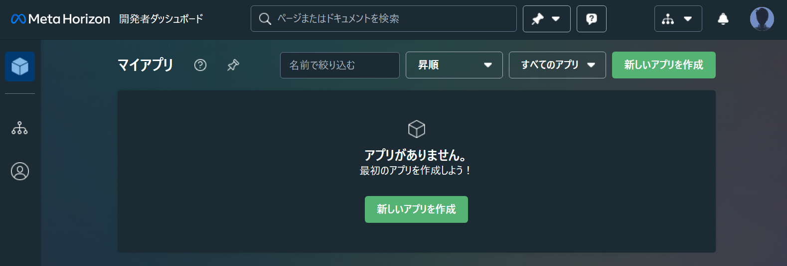
- モバイルアプリの Meta Horizon アプリから開発者モードの有効化を行います
2. (Windows only) Install the Quest software and connect your device:
ここにある Oculus サイトのリンクは機能しない。リダイレクトされて以下に飛ばされる。Quest Link アプリが必要になるのでインストールしておく。
5. Other device setup
特に無し
6. Set up version control
- バージョンコントロールの重要性について
- チュートリアル https://learn.unity.com/tutorial/set-up-version-control
1 - VR Basics
VR Project Setup
1.1 - VR Project Setup - Unity Learn
1. Open a new VR project
- デフォルトのテンプレートからのプロジェクト作成ではなくダウンロードできるテンプレートを使う
- 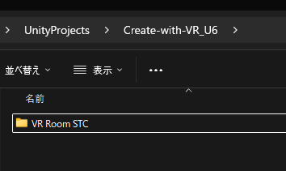
- 上記のように名前を変更したが、元の
VR Room Projectのままでも良い
- 上記のように名前を変更したが、元の
- プロジェクトを Unity Hub からディスクから追加で開く
- 同じバージョンが無かったため、現状最新の 6.3 を使う
- 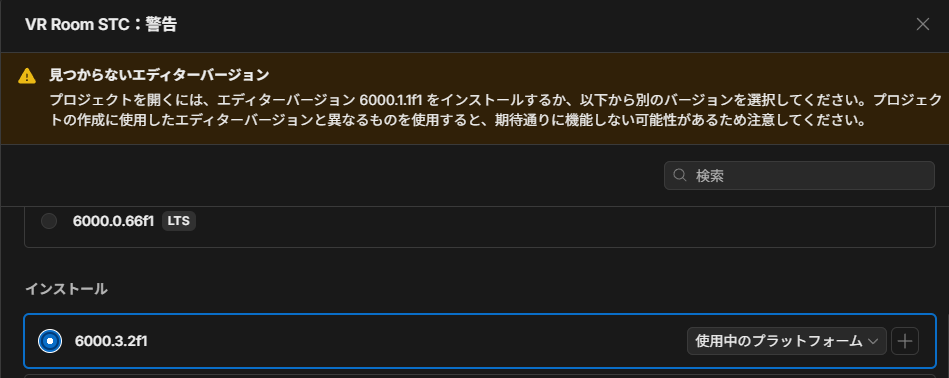
- 変換はできたようだが、Unity Editor が開いたところで以下のように
Errors and Warningsの警告が出ており、見事に VR 系のパッケージが当てはまっている。
- Invalid Signature なので一旦放置
- VR 開発用には以下のパッケージが必要らしい
- XR Plugin Management
- XR Interaction Toolkit
- OpenXR Plugin
- Universal Render Pipeline
- スクラッチから作るチュートリアルもある
- また、公式の VR テンプレートを使えば最初から揃っている
2. Open and explore the starter scene
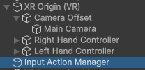
Main Camera,Right Hand Controller,Left Hand ControllerのそれぞれにTracked Pose Driverがアタッチされている
| Main Camera | Right Hand Controller | Left Hand Controller |
|---|---|---|
 | 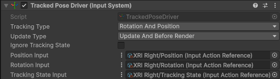 |  |
Input Action ManagerはXRI Default Input Systemという Input System 設定を読み込んでいる。- 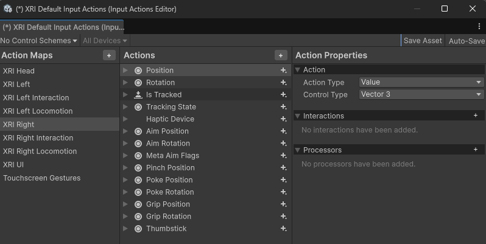
- ここにある設定が上記の
Tracked Pose Driverにも使われている
3. Add a room and background
- 窓からの景色がざっくり見えるように配置 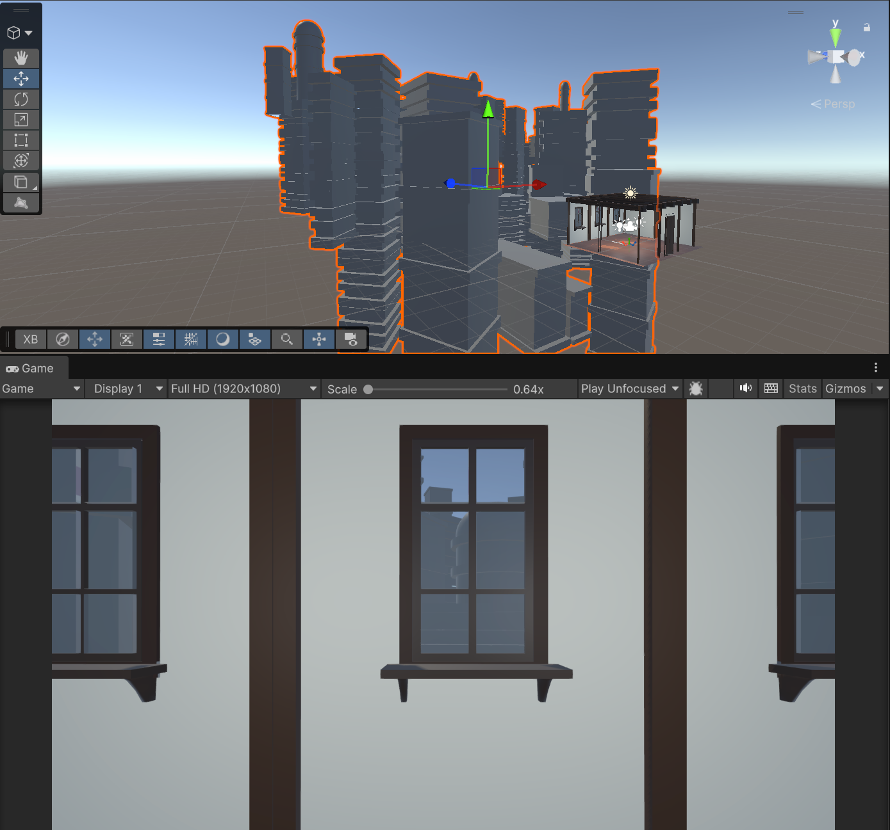
4. Run the app with the Device Simulator
- XR Device Simulator を使うとデバッグ実行ができる
- 実機で実行する際は必ず disabled にするか削除すること

5. Test in VR through Unity
- Open XR Plugin に関して
- 運良く Project Validation にはひっかからなかった

6. Build and run on your device
- Android Build Support が無い場合は、Unity Hub からインストールする

- 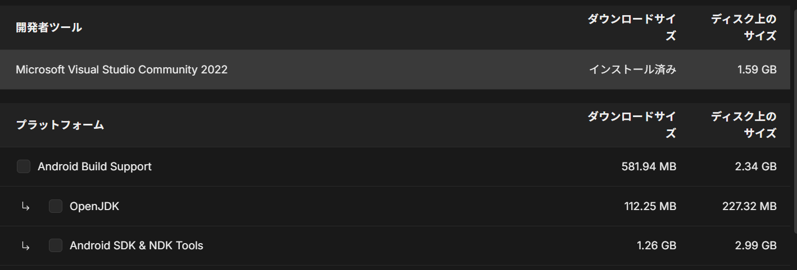
- 必須かは分からないが、Meta Quest の場合に ADB ドライバーについても言及があった
- デバイス設定 | Meta Horizon OS Developers
- zip をダウンロードして以下のように
.infのファイルを右クリックでインストールする 
- Quest 3 を接続して Refresh すると出てくる
- 無事 Quest 3 で起動できた

7. Test on other OpenXR-compatible devices
8. Recap
9. Extension Activities
実際のアナログ時計はもっと時・分がなめらかに動くと思いますが、とりあえず簡単に済ませました。
using System;
using UnityEngine;
public class Clock : MonoBehaviour
{
[SerializeField] private Transform hour;
[SerializeField] private Transform minute;
[SerializeField] private Transform second;
// Update is called once per frame
private void Update()
{
var now = DateTime.Now;
second.localRotation = Quaternion.Euler(now.Second * 6f, 0f, 0f);
minute.localRotation = Quaternion.Euler(now.Minute * 6f, 0f, 0f);
hour.localRotation = Quaternion.Euler(now.Hour * 30f, 0f, 0f);
}}
1.2 - VR Locomotion
1.2 - VR Locomotion - Unity Learn
1. Fill the room with furniture
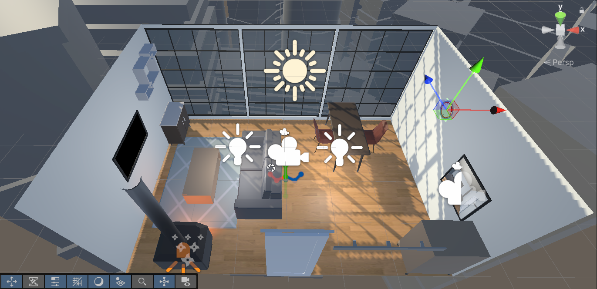
2. Add snap turning
XR Origin (VR)の子として Locomotion を作成- 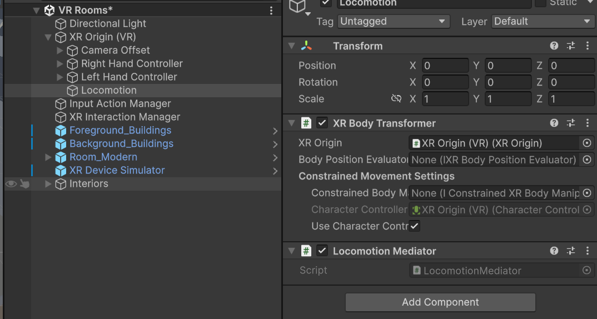
- チュートリアル通りに、
Add Character Controllerボタンを押すとXR Origin (VR)にCharacter Controllerが付いた - 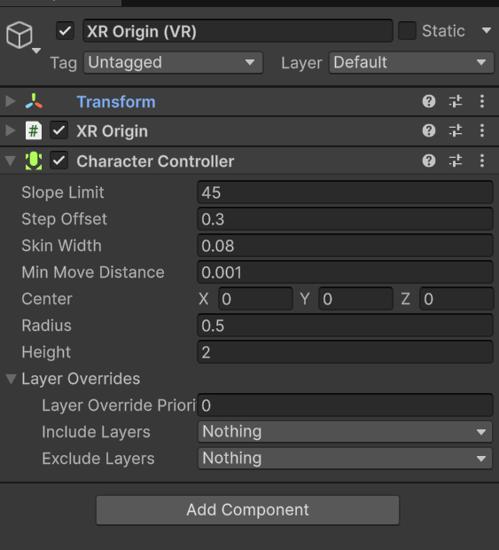
- Snap Turn
- Snap Turn Provider | XR Interaction Toolkit | 3.4.0-pre.2
- 日本語だと少しバージョンが下がる
- Snap Turn Provider (Action-based) | XR Interaction Toolkit | 2.0.1
-
このロコモーションプロバイダーによって、ユーザーは入力システムアクションからの 2D 軸入力を使用してリグを回転できます。
- 日本語だと少しバージョンが下がる
- Snap Turn Provider | XR Interaction Toolkit | 3.4.0-pre.2
- デバッグ実行すると確かに左右コントローラーモードにした状態で A/D キーを押すとスナップ回転する
3. Add Continuous turn
disorienting for people new to VR: VR 初心者には方向感覚を失わせる- Snap Turn と Continuous turn を同時に有効にするのは良くないので、左右のコントローラで切り替えるようにする
4. Add a teleportation area
- これまでと同様に
XR Origin (VR) -> Locomotionの下にTeleportという GameObject を作りTeleportation Providerを付ける - 今回は部屋の中央にある Rug に
Teleportation Areaをアタッチし、Teleportaion Providerプロパティに先ほど作成したTeleportGameObject を入れる - 実行すると、Ray が白く変わる

- このサンプルはコントローラのメッシュがないので Ray がどこにあるか一瞬わかりにくいですね。